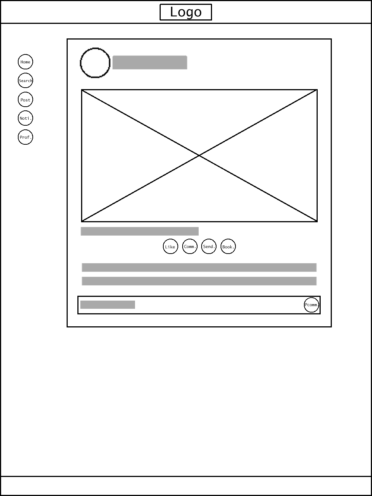
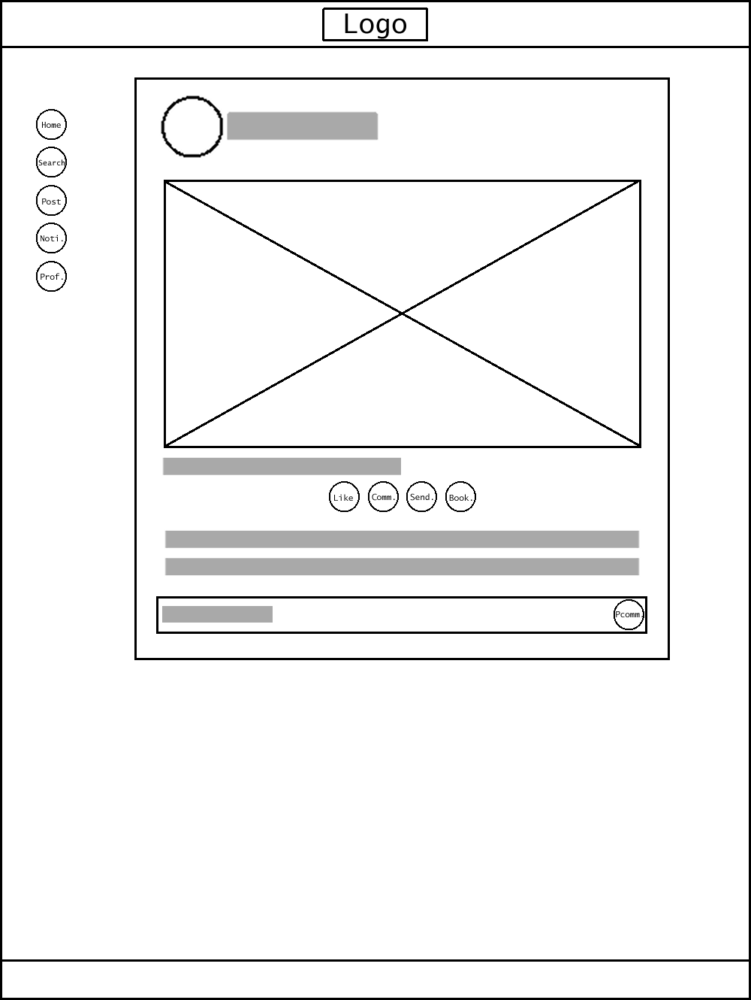
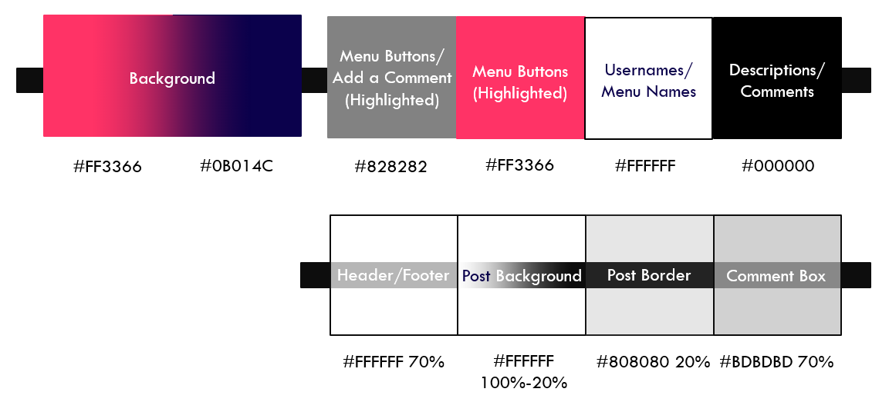
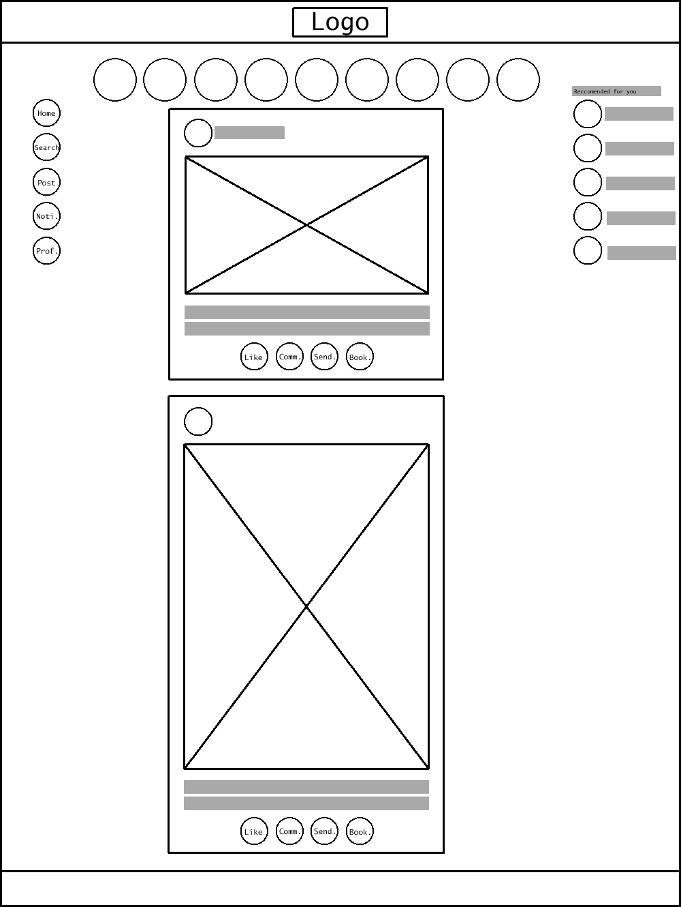

Instagram, a photo and video based social media platform, first launched in 2010 and is owned by Facebook. It allows users to post images, share short videos for a 24-hour period, and follow, connect, and communicate with other users. While many outside its primary demographic have found versatile ways to use Instagram, its main purpose it for creators to share images, usually of photography, artwork, or other forms of creation, with a wide user audience. Because of this, it has garnered a large number of creators who use Instagram as their main platform to promote themselves.
Despite this, the website has some flaws that hinder the user experience of its audience. Most notable perhaps is its inability to post from a computer. Most artist who use Instagram will create, edit, or store their work on their computer instead of their phone, requiring to transfer their work over every time they want to post. Additionally, creators have a limited range in which to crop photos, sometimes cutting off part of their work when posting. There are additionally some synergy issues with the app and website, as the navigation hub for both differs greatly, most notably in the search bar and instant messaging tabs. My goal to make the UI more intuitive, cater more towards Instagram’s primary user demographic, and synergize the app and desktop versions in order to make Instagram truly the best platform for creatives.
 

These final interior and exterior wireframes were chosen after several drafts. Originally I was debating having multiple images visible at the same time in a post, but figured it would be too crowded. Stories were moved back to above where posts show up, and the menu bar was made smaller. Finally, the design was given more space between assets in order to keep it from looking to crowded. A few other small details were changed, like the lines separating an image’s description from the comments, and the dot menu on the top right of a post.
The final color scheme ended up as a gradient between pink and indigo for the background with whites, greys, and blacks for all other details except highlighted menu items, which are also pink. Pink is a young and cheery color, while blue is calming and serene. These mix to create a happy and inviting atmosphere for the user, and together form two thirds of a triatic color scheme. Variance in these colors is created by varying opacity in the white and grey colors used over the pink and blue background to create visual interest. Additionally, an entirely new font was chosen, specifically the Open Sans font family, which provides a clean, simple reading experience.
As the first UI design project I’ve taken on, it’s taught me a lot. There are many things I would and am currently doing differently with my next project. I feel while this design has a lot of good elements, they don’t come together in a meaningful and coherent way. Many of the elements used feel basic and more akin to a prototype than a finished website. The design also could have taken more thorough planning to give it a well thought out foundation. All in all, I’m glad this project has given me a learning experience that has allowed me to make better work in the future.